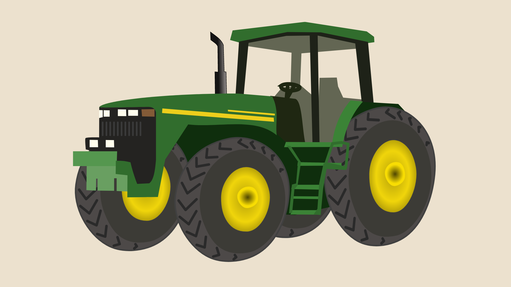
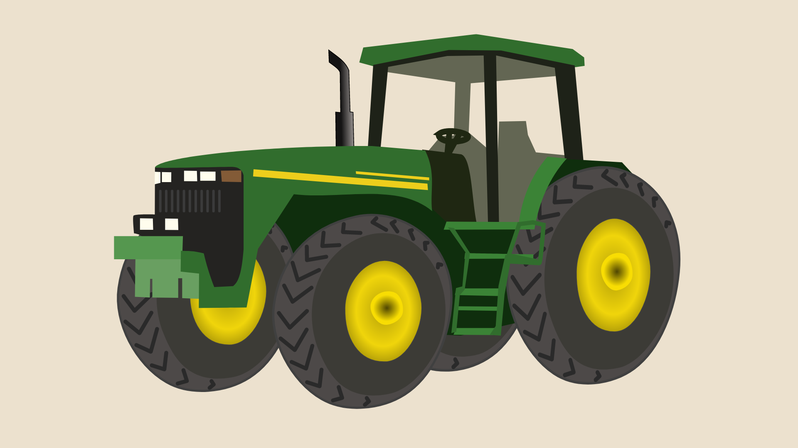

Agosto, 2021
Iniciamos la puesta en valor del campo
Esta página web es un proyecto para la materia Programación Web
Instituto Tecnológico de Buenos Aires - 2° Cuatrimestre 2022

Las fincas de Agropecuaria Los Bretes S.A están ubicadas en el Departamento Rawson en la calle 14 y calle América Sur, a 35 km. de San Juan capital y a 20 km. de la Villa Cabecera del Departamento Pocito. Cuentan con una superficie de 657 hectáreas.
Veropistacho es un producto de “Los Bretes Agroindustria S.L.”, una empresa con sede en Madrid y su filial en Argentina-San Juan-Rawson-Fincas Los Bretes SA, con más de 20 años como sociedad exclusiva en el sector agropecuario.
Las condiciones climáticas desérticas y áridas, las suficientes horas de frío y calor, los suelos de excelente calidad, el fácil e ilimitado acceso al agua, hacen de la provincia de San Juan el lugar ideal en Argentina para el cultivo del pistacho.
Veropistacho es un proyecto especializado en la producción y comercialización de Pistachos. Ubicada en San Juan, Argentina, zona con mejor proyección de crecimiento a nivel mundial por sus condiciones de clima, suelo y agua.
Iniciamos la puesta en valor del campo
Finalizamos la construcción de las casas
Habilitamos todos los pozos de agua
Iniciamos la plantación
Encontranos en nuestra página de Linkedin